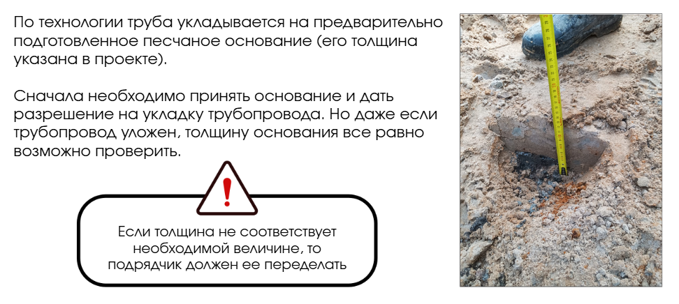

Операционный контроль
Андрей, первый урок позади. Надеюсь, что навыки проведения и прохождения входного контроля вы будете успешно применять в своей текущей и будущей работе. А пока двигаемся дальше.

На этом уроке мы будем тренироваться проводить операционный контроль. Но прежде чем перейти к практике, я расскажу вам, что такое операционный контроль, какие работы нельзя пропускать, а какие можно принимать совместно.
Операционный контроль – это второй вид контроля, который проводят на строительном объекте. Его называют контролем технологии выполнения работ.
Почему важен операционный контроль
Любое нарушение технологии работ может привести к итоговому негативному результату. Смотрите ниже реальные примеры нарушений работ, которые я выявила, а также последствия, к которым могли привести эти нарушения.

Подобных ситуаций можно избежать, если проводить операционный контроль.
Итак, при операционном контроле проверяется:
- последовательность и состав выполняемых операций
- соблюдение технологических режимов
- соответствие показателей качества и операций требованиям согласованной ПД и РД
- своевременного предупреждения возможных дефектов
- контроль применяемых материалов в соответствии с РД
Когда у одного инженера в работе множество объектов, каждую операцию проверить очень сложно. Поэтому некоторые из них можно совмещать. Главное, чтобы выполнялось условие о возможности проверке предыдущей работы.
Подобная ситуация возможна при отсутствии официального вызова со стороны подрядчика. Если вызов был, а вы не приехали, подрядчик имеет право проводить приемку без вас
Давайте разберем некоторые примеры из моей практики.
Пример 1. Прокладка трубопровода

* Те же правила касаются укладки кабельных линий.
Пример 2. Армирование конструкций на бетонное основание

Подбетонку можно принять вместе с армированием, так как у нас остается доступ для проверки планово-высотного положения.
Так, делаем вывод, что в тех работах, которые выполнены до предъявляемых и в которых остается визуальный доступ к конструкциям и основаниям – приемку можно совмещать.
Перейдем от слов к видео. В нем я показала, как проводить операционный контроль на примере работ по горизонтальному направленному бурению.
В дополнение к видео я подготовила для вас слайды о том, в каких случаях операционный контроль нельзя пропускать. Рекомендую скачать их и использовать в работе как памятку.
В каких случаях операционный контроль не следует пропускать
Скачать PDF · штатный экспорт с пустыми персональными полями.

Текст встроенного материала
В каких случаях операционный контроль не следует пропускать
Разработка грунта и шурфовка существующих коммуникаций
Вопрос возникает именно в процессе работы – это ручная или механизированная разработка. Если готовился котлован, а впоследствии в актах приемки работ появится пункт о ручной разработке в 40% от объема – это привлекает внимание, а подрядчик будет настаивать на этой цифре, т.к. данная работа стоит дороже. Поэтому промежуточный контроль лишним не будет
Бетонирование
Обратная засыпка
Восстановление благоустройства
Армирование
Источник и ограничения. Проверка ответов и персонализация зависят от исходного сайта. Локальные файлы сохранены в том виде, в каком были доступны.
В чек-листе ниже смотрите, что проверяют при операционном контроле по разным видам работ. С подробным перечнем можно ознакомиться в сборнике «Схемы операционного контроля качества строительных, ремонтно-строительных и монтажных работ». Изучите эти пункты, чтобы успешно справиться с практическим заданием.
Теперь вы знаете, что операционный контроль проводится на всем протяжении строительства. Давайте закрепим материал урока в тренажере. Он поможет вам лучше ориентироваться в последовательности операционного контроля.
Задание: расставьте этапы технологии работ при производстве земляных, бетонных работ и работ по благоустройству.